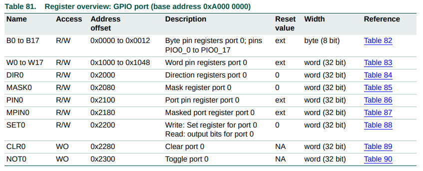
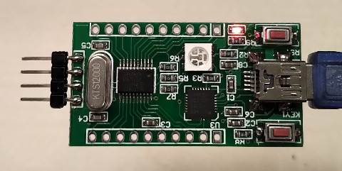
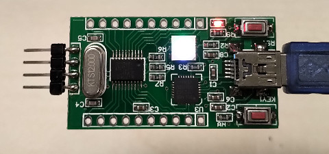

參考資訊：
https://github.com/BakaOsaka/LPC810-ASM
https://studio.segger.com/packages/LPC800/CMSIS/Documents/UM10601.pdf
Register

.cpu cortex-m0
.thumb
.equ GPIO_DIR0, 0xa0002000
.equ GPIO_PIN0, 0xa0002100
.equ GPIO_SET0, 0xa0002200
.equ GPIO_CLR0, 0xa0002280
.equ BIT1, 1
.equ BIT7, 7
.equ BIT16, 16
.equ BIT17, 17
.thumb_func
.global _start
_start:
.word 0x10000400 @ stacktop
.word reset @ reset
.word hang @ nmi
.word hang @ hardfault
.word hang @ reserved
.word hang @ reserved
.word hang @ reserved
.word hang @ reserved
.word hang @ reserved
.word hang @ reserved
.word hang @ reserved
.word hang @ svcall
.word hang @ reserved
.word hang @ reserved
.word hang @ pendsv
.word hang @ systick
.thumb_func
reset:
ldr r0, =GPIO_DIR0
ldr r1, =((1 << BIT7) | (1 << BIT16) | (1 << BIT17))
str r1, [r0]
loop:
ldr r0, =GPIO_SET0
ldr r1, =((1 << BIT7) | (1 << BIT16) | (1 << BIT17))
str r1, [r0]
bl delay
ldr r0, =GPIO_CLR0
ldr r1, =((1 << BIT7) | (1 << BIT16) | (1 << BIT17))
str r1, [r0]
bl delay
b loop
delay:
push {lr}
ldr r0, =3000000
1:
nop
sub r0, #1
bne 1b
pop {pc}
hang:
b .
.end
main.ld
OUTPUT_FORMAT("elf32-littlearm", "elf32-bigarm", "elf32-littlearm")
OUTPUT_ARCH(arm)
MEMORY {
ROM (rx) : ORIGIN = 0x00000000, LENGTH = 0x00001000
RAM (rwx) : ORIGIN = 0x10000000, LENGTH = 0x00000400
}
SECTIONS {
. = 0x0;
.text : { *(.text*) } > ROM
.rodata : { *(.rodata*) } > ROM
.bss : { *(.bss*) } > RAM
. = ALIGN(8);
}
編譯
$ arm-none-eabi-as -mcpu=cortex-m0 -mthumb main.S -o main.o $ arm-none-eabi-ld -o main.elf -T main.ld main.o $ arm-none-eabi-objcopy main.elf main.bin -O binary $ arm-none-eabi-objcopy main.elf main.hex -O ihex
燒錄步驟：
1. 連接USB與PC
2. P0_12接到GND
3. 按一下RST按鍵
4. 鬆開P0_12
5. 執行如下命令
$ sudo lpc21isp -wipe -control -verify -debug2 ./main.hex /dev/ttyUSB0 9600 12000
完成

